library(ggplot2)
library(psych)
library(Hmisc)
library(car)
library(lmtest)
library(effectsize)
library(rcompanion)
library(tidyr)
library(predictmeans)Datenanalyse ALM - Kontraste
Allgemeines Lineares Modell 2 - Kontraste
In der letzten Sitzung haben wir den Behandlungsfaktor per Dummykodierung dichotomisiert. Das ist zwar schon gut, hat aber den Nachteil, dass multiples Testen auftritt, für das korrigiert werden muss.
Um das zu umgehen, lernen wir heute ein noch besseres Verfahren, die Kontraste, (wieder) kennen.
Vorbereitung
Auch hier wieder darauf achten, dass das Verzeichnis passt.
#setwd("Sitzungen")
dat_1 <- read.csv(file = "Dat_VR_Anxiety_lm4.csv", header = TRUE, sep = ",", dec = ".", na.strings = "NA")
# Characterstrings als Faktoren definieren
dat_1$Gruppe <- as.factor(dat_1$Gruppe)
dat_1$Gruppe <- factor(dat_1$Gruppe, levels = c("Warteliste", "in_sensu", "in_virtuo"))
# Change berechnen
dat_1$Change <- dat_1$Post - dat_1$PreVisuelle Analyse
# Post als Kriterium/outcome
## Prä-Messung
ggplot(dat_1, aes(Gruppe, Pre)) +
geom_violin() +
geom_jitter(width = 0.3, height = 0, col = "grey", size = 0.5) +
stat_summary(fun = mean, geom = "point", size = 2, col = "red") +
stat_summary(geom="errorbar", fun.data=mean_cl_normal, width=.1, col ="red")+
ylim(0,40) +
ylab("Score Anxiety") +
xlab("Treatment") +
ggtitle("Belastung vor Behandlung")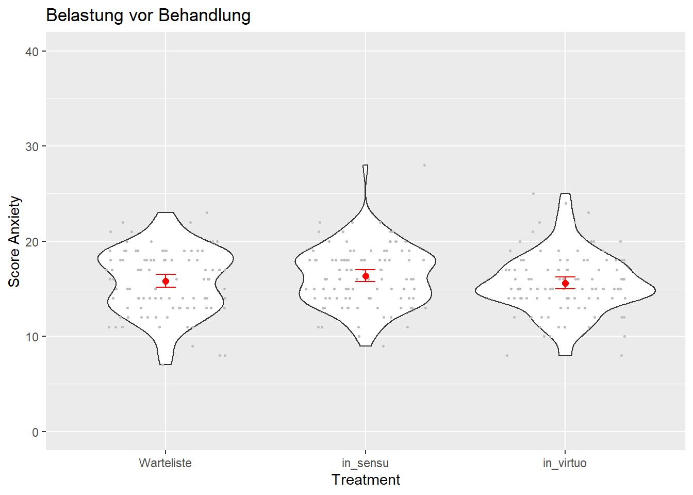
## Post-Messung
ggplot(dat_1, aes(Gruppe, Post)) +
geom_violin() +
geom_jitter(width = 0.3, height = 0, col = "grey", size = 0.5) +
stat_summary(fun = mean, geom = "point", size = 2, col = "red") +
stat_summary(geom="errorbar", fun.data=mean_cl_normal, width=.1, col ="red")+
ylim(0,40) +
ylab("Score Anxiety") +
xlab("Treatment") +
ggtitle("Belastung nach Behandlung")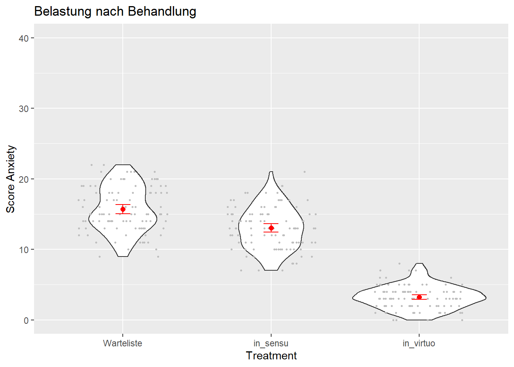
## Zusammenhang Pre-Werte und Post-Werte
ggplot(dat_1, aes(Pre, Post)) +
geom_point() +
geom_smooth(method = "lm") +
facet_wrap(~Gruppe)+
ylab("Post-Werte") +
xlab("Prä-Werte")+
ggtitle("Zusammenhang Prä und Post pro Gruppe")`geom_smooth()` using formula 'y ~ x'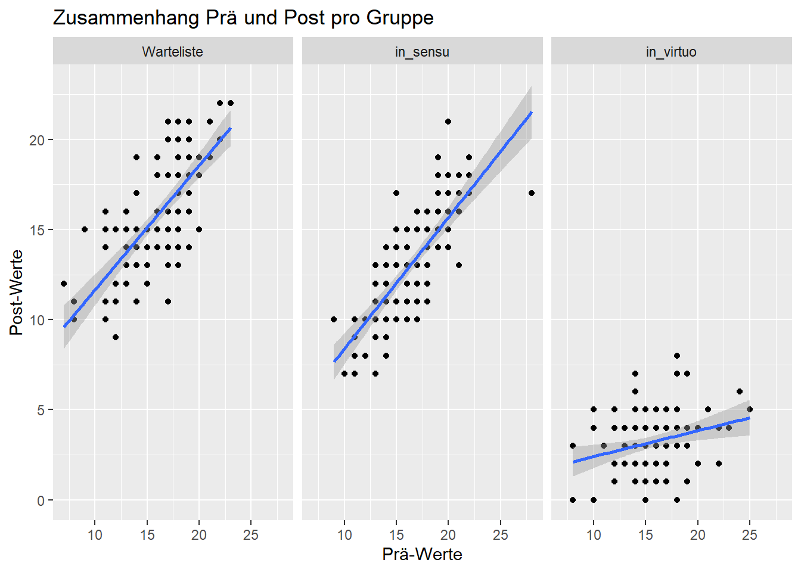
# Veränderung prä zu post als Kriterium
## Veraenderung
ggplot(dat_1, aes(Gruppe, Change)) +
geom_violin() +
geom_jitter(width = 0.3, height = 0, col = "grey", size = 0.5) +
stat_summary(fun = mean, geom = "point", size = 2, col = "red") +
stat_summary(geom="errorbar", fun.data=mean_cl_normal, width=.1, col ="red")+
ylim(-30,+10) +
ylab("Absolute Change Score Anxiety") +
xlab("Treatment") +
ggtitle("Veränderung Belastung Prä zu Post")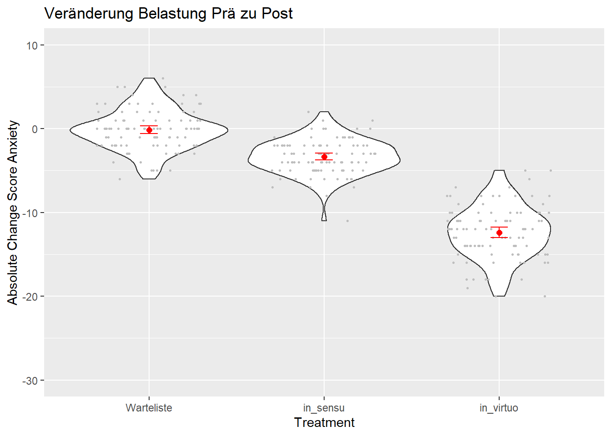
## Zusammenhang Pre-Werte und Veränderung
ggplot(dat_1, aes(Pre, Change)) +
geom_point() +
geom_smooth(method = "lm") +
facet_wrap(~Gruppe)+
ylab("Post-Werte") +
xlab("Prä-Werte")+
ggtitle("Zusammenhang Prä und Change pro Gruppe")`geom_smooth()` using formula 'y ~ x'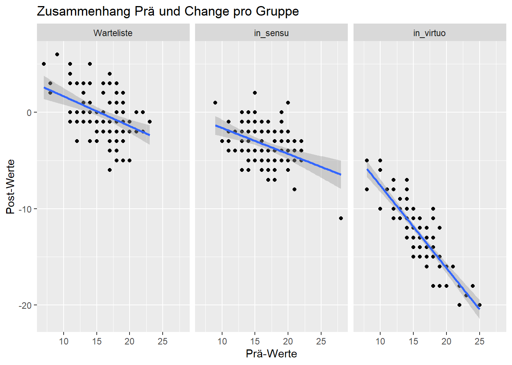
Bekanntes Modell
Score Pre-Treatment und Behandlung sagen Change im Score vorher.
Schritt 1: Allgemeines lineares Modell anpassen
# Zentrierung des kontinuierlichen Praediktors Pre-Wert
dat_1$Pre_c <- as.vector(scale(dat_1$Pre, center = TRUE, scale = FALSE)) # dient der besseren Interpretierbarkeit
# Modelldefinition
M1 <- lm(Change ~ Pre_c + Gruppe, data = dat_1)
# Schaetzung der Parameter
summary(M1)
Call:
lm(formula = Change ~ Pre_c + Gruppe, data = dat_1)
Residuals:
Min 1Q Median 3Q Max
-5.3068 -1.4209 0.0787 1.3778 6.0510
Coefficients:
Estimate Std. Error t value Pr(>|t|)
(Intercept) -0.18728 0.20858 -0.898 0.37
Pre_c -0.47281 0.03741 -12.638 <2e-16 ***
Gruppein_sensu -2.93941 0.29559 -9.944 <2e-16 ***
Gruppein_virtuo -12.35875 0.29505 -41.887 <2e-16 ***
---
Signif. codes: 0 '***' 0.001 '**' 0.01 '*' 0.05 '.' 0.1 ' ' 1
Residual standard error: 2.085 on 296 degrees of freedom
Multiple R-squared: 0.872, Adjusted R-squared: 0.8707
F-statistic: 672.3 on 3 and 296 DF, p-value: < 2.2e-16# Deskriptive Mittelwerte
describeBy(dat_1$Change, group = dat_1$Gruppe, data = dat_1, mat = TRUE) item group1 vars n mean sd median trimmed mad min max
X11 1 Warteliste 1 100 -0.14 2.391145 0 -0.1625 1.4826 -6 6
X12 2 in_sensu 1 100 -3.33 2.089198 -3 -3.3125 1.4826 -11 2
X13 3 in_virtuo 1 100 -12.39 3.152344 -12 -12.3500 2.9652 -20 -5
range skew kurtosis se
X11 12 0.11118794 0.005909878 0.2391145
X12 13 -0.29347808 0.910666324 0.2089198
X13 15 -0.07598674 -0.135420554 0.3152344# Geschätzte Mittelwerte
predmeans <- predictmeans(M1, "Gruppe", adj ="BH", barplot = TRUE)
The predicted means are estimated at
Pre_c
0 predmeans$`Predicted Means`
Gruppe
Warteliste in_sensu in_virtuo
-0.1873 -3.1267 -12.5460
$`Standard Error of Means`
Gruppe
Warteliste in_sensu in_virtuo
0.20858 0.20916 0.20891
$`Standard Error of Differences`
Max.SED Min.SED Aveg.SED
0.2962943 0.2950523 0.2956464
$LSD
Max.LSD Min.LSD Aveg.LSD
0.58311 0.58067 0.58184
attr(,"Significant level")
[1] 0.05
attr(,"Degree of freedom")
[1] 296
$`Pairwise p-value`
Warteliste in_sensu in_virtuo
Warteliste 0 9.9441 41.8866
in_sensu 0 0.0000 31.7905
in_virtuo 0 0.0000 0.0000
attr(,"Degree of freedom")
[1] 296
attr(,"Note")
[1] "The matrix has t-value above the diagonal, p-value (adjusted by 'BH' method) below the diagonal"
attr(,"Letter-based representation of pairwise comparisons at significant level '0.05'")
Treatment Mean Group
1 Warteliste -0.1872813 A
2 in_sensu -3.1266905 B
3 in_virtuo -12.5460282 C
$mean_table
Gruppe Predicted means Standard error Df LL of 95% CI UL of 95% CI
1 Warteliste -0.1872813 0.2085783 296 -0.5977656 0.223203
2 in_sensu -3.1266905 0.2091643 296 -3.5383282 -2.715053
3 in_virtuo -12.5460282 0.2089099 296 -12.9571651 -12.134891
LetterGrp
1 A
2 B
3 Cpredmeans$predictmeansBarPlot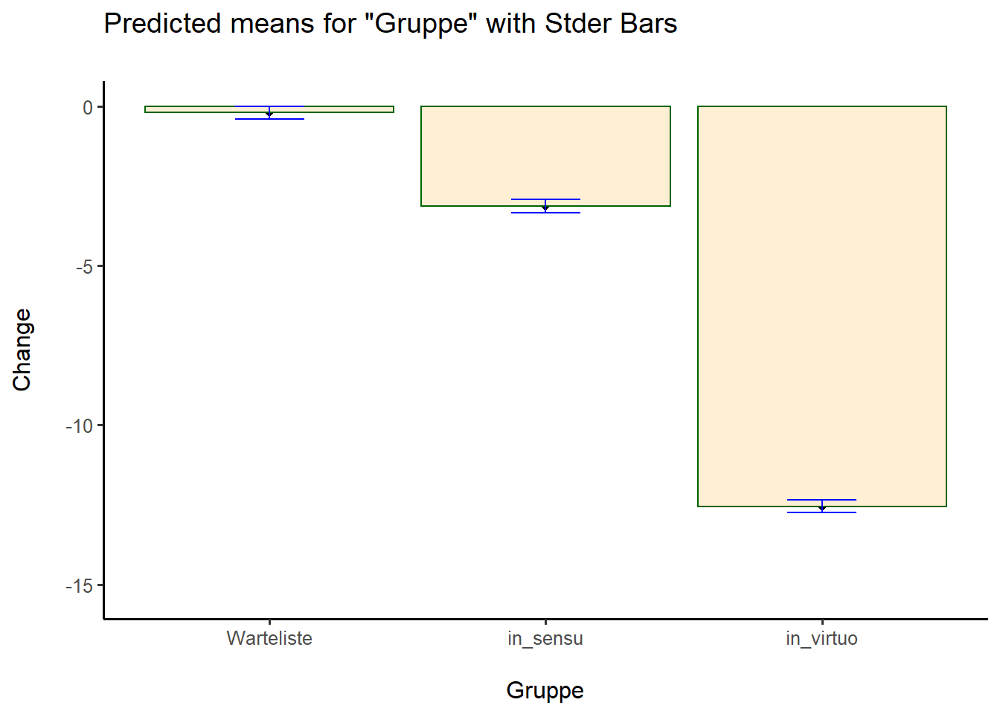
# Geschätzte Mittelwerte
new <- data.frame(Pre_c = rep(c(-10,0,10),3), Gruppe = c(rep("Warteliste",3),rep("in_sensu", 3), rep("in_virtuo",3)))
new$Gruppe <- as.factor(new$Gruppe)
predmeans1b <- predict(M1, newdata = new, interval = "confidence")
predmeans1b.matrix <- as.data.frame(cbind(new, predmeans1b))
predmeans1b.matrix Pre_c Gruppe fit lwr upr
1 -10 Warteliste 4.5408458 3.7043234 5.377368
2 0 Warteliste -0.1872813 -0.5977656 0.223203
3 10 Warteliste -4.9154083 -5.7647930 -4.066024
4 -10 in_sensu 1.6014365 0.7307000 2.472173
5 0 in_sensu -3.1266905 -3.5383282 -2.715053
6 10 in_sensu -7.8548176 -8.6702551 -7.039380
7 -10 in_virtuo -7.8179011 -8.6397093 -6.996093
8 0 in_virtuo -12.5460282 -12.9571651 -12.134891
9 10 in_virtuo -17.2741553 -18.1384051 -16.409905# ANOVA zur Bestimmung der Quadratsummen für die beiden Prädiktoren
Anova(M1)Anova Table (Type II tests)
Response: Change
Sum Sq Df F value Pr(>F)
Pre_c 694.6 1 159.71 < 2.2e-16 ***
Gruppe 8311.5 2 955.55 < 2.2e-16 ***
Residuals 1287.3 296
---
Signif. codes: 0 '***' 0.001 '**' 0.01 '*' 0.05 '.' 0.1 ' ' 1Hier haben wir neben den aus der letzten Sitzung bekannten Schritten die predict()-Funktion benutzt. Mit dieser können wir das Modell um eine Vorhersage für eine bestimmte Konfiguration der Prädiktoren bitten. Hat eine Person einen Pre_c-Score von -10 (zentriert!) und eine Behandlung in sensu, ließe sich der durch das Modell vorhergsagte Wert also in der predmeans1b.matrix-Tabelle ablesen.
Modell mit Kontrasten anstelle von Dummycodierung
Die beiden zu prüfenden Hypothesen waren:
- CBT ist wirksam.
- CBT mit in virtuo Exposition ist wirksamer als CBT mit in sensu Exposition.
Diese beiden Kontraste können durch einen Helmert-Kontrast für 3 Ausprägungen eines Faktors erfasst werden. Dazu sortieren wir die Faktorstufen so, dass die Warteliste zuletzt kommt, damit in einem Vergleich in_sensu mit in_virtuo und im zweiten Vergleich diese beiden zusammen mit der Warteliste verglichen werden.
dat_1$Gruppe <- factor(dat_1$Gruppe, levels = c("in_virtuo", "in_sensu", "Warteliste"))
contrasts(dat_1$Gruppe) <- contr.helmert(3)
contrasts(dat_1$Gruppe) [,1] [,2]
in_virtuo -1 -1
in_sensu 1 -1
Warteliste 0 2Zuletzt schauen wir uns noch an, ob die Kontraste richtig gesetzt sind (nützlich zur Selbstüberprüfung).
Prüfung der Hypothesen
M2 <- lm(Change ~ Pre_c + Gruppe, data = dat_1)
summary(M2)
Call:
lm(formula = Change ~ Pre_c + Gruppe, data = dat_1)
Residuals:
Min 1Q Median 3Q Max
-5.3068 -1.4209 0.0787 1.3778 6.0510
Coefficients:
Estimate Std. Error t value Pr(>|t|)
(Intercept) -5.28667 0.12040 -43.91 <2e-16 ***
Pre_c -0.47281 0.03741 -12.64 <2e-16 ***
Gruppe1 4.70967 0.14815 31.79 <2e-16 ***
Gruppe2 2.54969 0.08516 29.94 <2e-16 ***
---
Signif. codes: 0 '***' 0.001 '**' 0.01 '*' 0.05 '.' 0.1 ' ' 1
Residual standard error: 2.085 on 296 degrees of freedom
Multiple R-squared: 0.872, Adjusted R-squared: 0.8707
F-statistic: 672.3 on 3 and 296 DF, p-value: < 2.2e-16# Mittelwert Change overall
mean(dat_1$Change)[1] -5.286667# Vorhergesagte Mittelwerte
pred.means2 <- predictmeans(M2, "Gruppe", adj ="BH", barplot = TRUE)
The predicted means are estimated at
Pre_c
0 pred.means2$`Predicted Means`
Gruppe
in_virtuo in_sensu Warteliste
-12.5460 -3.1267 -0.1873
$`Standard Error of Means`
Gruppe
in_virtuo in_sensu Warteliste
0.20891 0.20916 0.20858
$`Standard Error of Differences`
Max.SED Min.SED Aveg.SED
0.2962943 0.2950523 0.2956464
$LSD
Max.LSD Min.LSD Aveg.LSD
0.58311 0.58067 0.58184
attr(,"Significant level")
[1] 0.05
attr(,"Degree of freedom")
[1] 296
$`Pairwise p-value`
in_virtuo in_sensu Warteliste
in_virtuo 0 -31.7905 -41.8866
in_sensu 0 0.0000 -9.9441
Warteliste 0 0.0000 0.0000
attr(,"Degree of freedom")
[1] 296
attr(,"Note")
[1] "The matrix has t-value above the diagonal, p-value (adjusted by 'BH' method) below the diagonal"
attr(,"Letter-based representation of pairwise comparisons at significant level '0.05'")
Treatment Mean Group
1 Warteliste -0.1872813 A
2 in_sensu -3.1266905 B
3 in_virtuo -12.5460282 C
$mean_table
Gruppe Predicted means Standard error Df LL of 95% CI UL of 95% CI
1 in_virtuo -12.5460282 0.2089099 296 -12.9571651 -12.134891
2 in_sensu -3.1266905 0.2091643 296 -3.5383282 -2.715053
3 Warteliste -0.1872813 0.2085783 296 -0.5977656 0.223203
LetterGrp
1 A
2 B
3 Cpred.means2$predictmeansBarPlot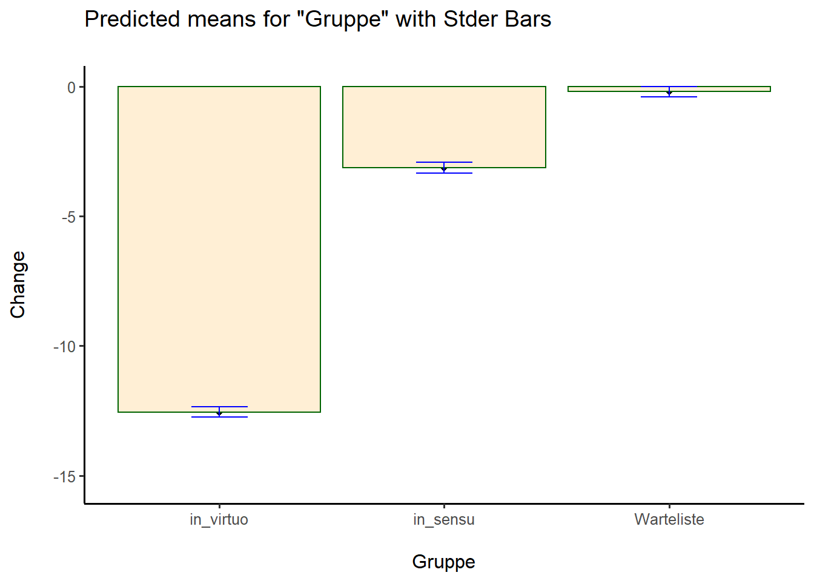
Anova(M2)Anova Table (Type II tests)
Response: Change
Sum Sq Df F value Pr(>F)
Pre_c 694.6 1 159.71 < 2.2e-16 ***
Gruppe 8311.5 2 955.55 < 2.2e-16 ***
Residuals 1287.3 296
---
Signif. codes: 0 '***' 0.001 '**' 0.01 '*' 0.05 '.' 0.1 ' ' 1Die Koeffizienten von Kontrastprädiktoren ließen sich zwar mathematisch genau interpretieren, aber uns interessiert nur die Richtung (und natürlich die Signifikanz). Um der Frage vorzubeugen, wie sich das denn genau machen ließe, wird das im nächsten Absatz beschrieben. Zunächst aber zu der einfachen Variante:
- Der Regressionsparameter ist positiv, was bedeutet, dass die Stufen mit positiven Kontrastkoeffizienten einen höheren Change-Wert haben. Je niedriger der Change-Wert ist, desto höher ist die Verbesserung. Zusammen bedeutet das, dass Menschen mit Exposition in sensu eine geringere Verbesserung aufweisen (positiver Regressionsparameter + positiver Kontrastkoeffizient => höherer Change-Wert => geringere Verbesserung).
- Mit der gleichen Logik haben Menschen in der Warteliste eine noch geringere Verbesserung (positiver Regressionsparameter + positiver Kontrastkoeffizient => höherer Change-Wert => geringere Verbesserung).
Und nun für alle besonders Interessierten: Das Modell gibt uns zusammen mit den Kontrastkoeffizienten schon vor, wie wir die genauen Unterschiede zwischen den Mittelwerten der verschiedenen Gruppen ausrechnen müssen. So gilt:
- delta_in_virtuo = (-1) * beta_Gruppe1 + (-1) * beta_Gruppe2 ~= -4.71 - 2.55 = -7.26
- delta_in_sensu = 1 * beta_Gruppe1 + (-1) * beta_Gruppe2 ~= 4.71 - 2.55 = 2.16
- delta_Warteliste = 0 * beta_Gruppe1 + 2 * beta_Gruppe2 ~= 2 * 2.55 = 5.10
Ich habe dabei ein “delta” vor die Ausprägung geschrieben, weil das Ergebnis noch mit den anderen Prädiktoren verrechnet werden müsste, um den wirklichen Mittelwert in der Gruppe zu erhalten (vor allem mit dem Intercept).
Check 2: Analyse der Residuen
## Verteilung der Residuen
plotNormalDensity(M2$residuals)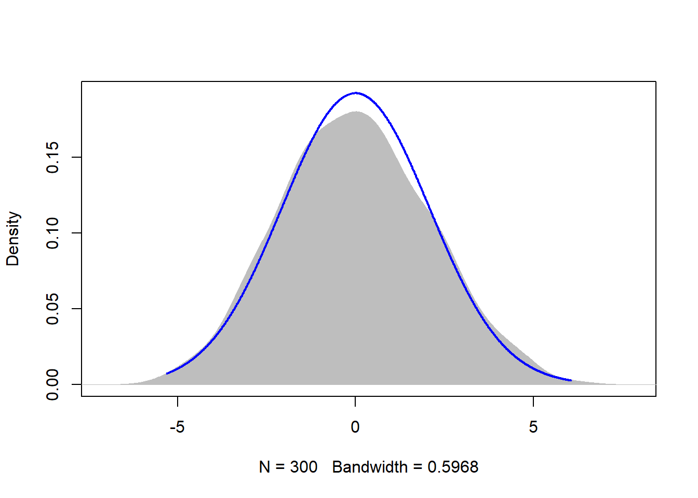
## Verteilung der Residuen in Abhängigkeit von vorhergesagten Werten
scatterplot(rstandard(M2)~fitted(M2))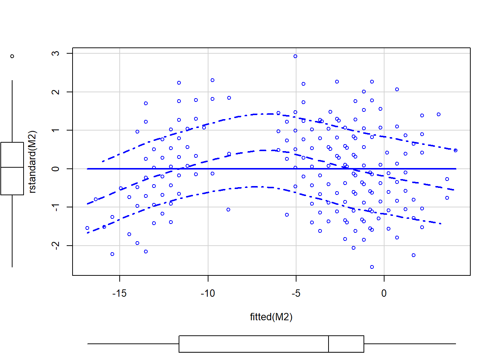
scatterplot(rstandard(M2)~dat_1$ID)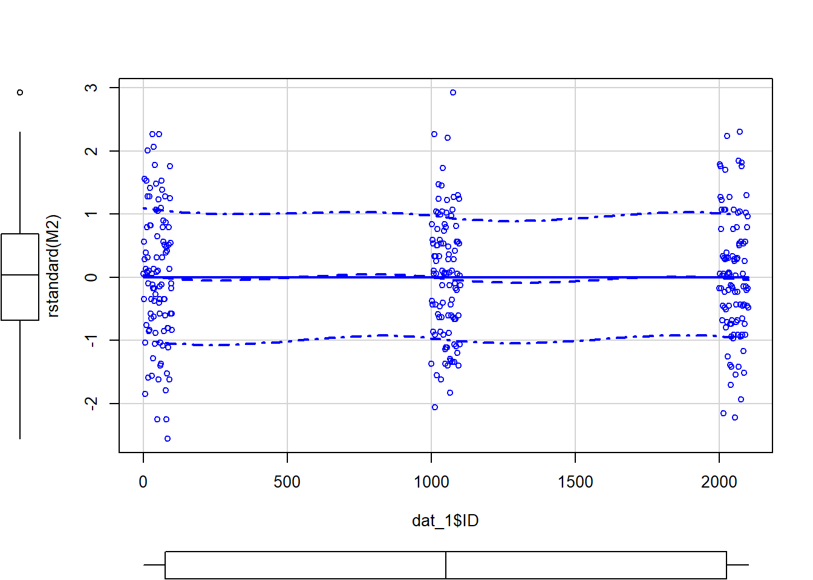
## Statistischer Test auf Homoskedastizität: Breusch-Pagan Test
bptest(M2)
studentized Breusch-Pagan test
data: M2
BP = 2.5162, df = 3, p-value = 0.4724Check 4: Einflussreiche Ausreißer
Cook’s distance ist ein gutes Maß zur Ermittlung zu einflussreicher Ausreißer. Die Werte der einzelnen Fälle sollte nicht größer sein als 4/(N-k-1). Die Summe sollte bei 1 liegen.
cd <- cooks.distance(M2)
#View(cd)
plot(M2,4)
abline(h = 0.0273)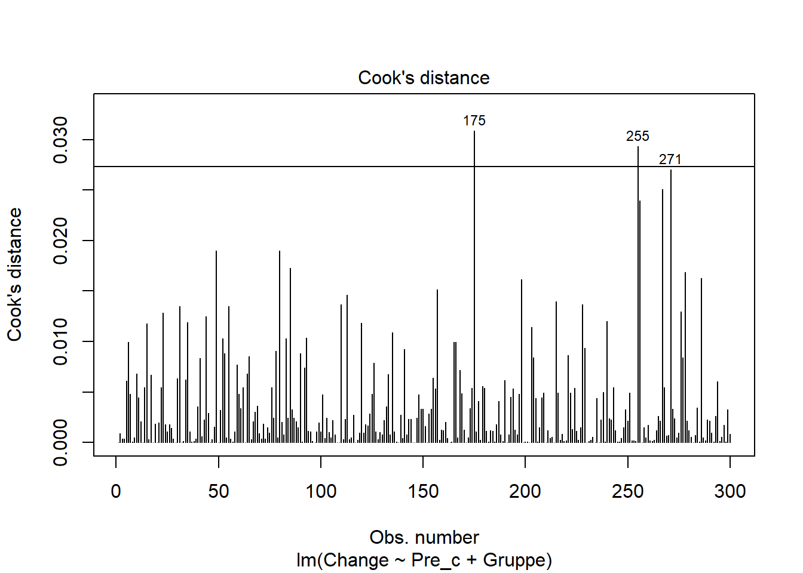
hist(cd)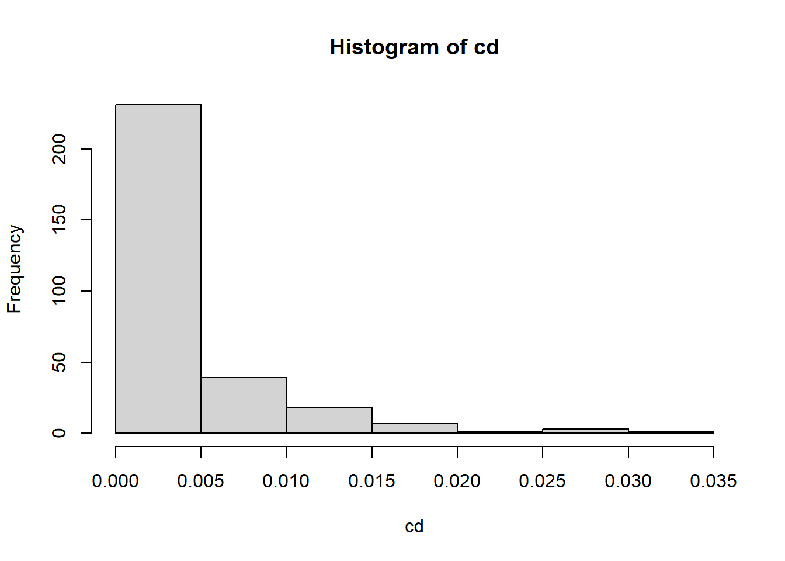